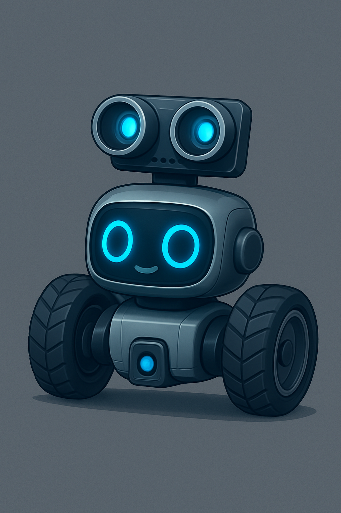

Your Adventure in Robotics and Coding Starts NOW!
Hello and welcome to the world of robotics! You're holding more than just a box of parts; you're holding the key to unlocking your creativity, learning to code, and building your very own smart robot. This kit is designed for curious minds like yours. We'll guide you through every screw, wire, and line of code.
Don't worry if this is your first time building a robot. Every expert was once a beginner! Take your time, follow the steps, and most importantly, have fun!
Before you start, let's make sure you have all your parts. Check your kit against this list.
| Component | Description | Quantity |
|---|---|---|
| Chassis Plate | The base of your robot where everything mounts. | 1 |
| Arduino UNO | The "brain" of your robot. | 1 |
| V5 Sensor Shield | Makes connecting sensors and motors easy. | 1 |
| L298N Motor Driver | The "muscle" that controls the motors. | 1 |
| DC Gear Motors | These spin the wheels. | 2 |
| Wheels | The robot's wheels. | 2 |
| Caster Wheel | A free-swiveling wheel for balance. | 1 |
| Ultrasonic Sensor | The "eyes" of your robot. | 1 |
| Servo Motor | A motor that allows the "eyes" to look around. | 1 |
| Battery Holder | Powers your robot. | 1 |
| USB Cable | Connects your Arduino to a computer. | 1 |
| Screws, Nuts & Wires | A bag of fasteners and connectors. | 1 set |
Instruction: Place a motor on the chassis. Secure it using two brackets, four long screws, and four nuts. Repeat for the second motor.
Instruction: Align the slot on the wheel with the motor's shaft and gently but firmly push the wheels on.
Instruction: Attach the ball caster wheel to the front end of the chassis using short screws and nuts.
Instruction: Mount the Arduino UNO using standoffs. Then, press the V5 Sensor Shield firmly onto the Arduino, making sure all the pins align.
Instruction: Find a good spot for the L298N motor driver, usually behind the Arduino, and mount it with standoffs.
Instruction: Snap the Ultrasonic Sensor into its bracket and attach the bracket to the servo motor. Mount the servo to the front of the chassis.
Pay close attention to the colors and ports. This diagram shows how everything connects.
Use the Arduino IDE software to upload this code to your robot's brain via the USB cable.
#include <Servo.h>
// --- Define Pins ---
const int ENA = 9, IN1 = 7, IN2 = 6;
const int IN3 = 5, IN4 = 4, ENB = 10;
const int trigPin = 12, echoPin = 13;
const int servoPin = 11;
long duration;
int distance;
Servo myServo;
void setup() {
pinMode(ENA, OUTPUT); pinMode(IN1, OUTPUT);
pinMode(IN2, OUTPUT); pinMode(IN3, OUTPUT);
pinMode(IN4, OUTPUT); pinMode(ENB, OUTPUT);
pinMode(trigPin, OUTPUT);
pinMode(echoPin, INPUT);
myServo.attach(servoPin);
myServo.write(90);
Serial.begin(9600);
}
void loop() {
distance = getDistance();
if (distance <= 20) {
robotStop();
delay(500);
lookAndDecide();
} else {
robotForward();
}
}
int getDistance() {
digitalWrite(trigPin, LOW); delayMicroseconds(2);
digitalWrite(trigPin, HIGH); delayMicroseconds(10);
digitalWrite(trigPin, LOW);
duration = pulseIn(echoPin, HIGH);
return duration * 0.034 / 2;
}
void lookAndDecide() {
myServo.write(180); delay(1000);
int distanceLeft = getDistance();
myServo.write(0); delay(1000);
int distanceRight = getDistance();
myServo.write(90); delay(500);
if (distanceLeft > distanceRight) {
robotTurnLeft(); delay(500);
} else {
robotTurnRight(); delay(500);
}
}
void robotForward() {
digitalWrite(IN1, HIGH); digitalWrite(IN2, LOW);
digitalWrite(IN3, HIGH); digitalWrite(IN4, LOW);
analogWrite(ENA, 200); analogWrite(ENB, 200);
}
void robotStop() {
digitalWrite(IN1, LOW); digitalWrite(IN2, LOW);
digitalWrite(IN3, LOW); digitalWrite(IN4, LOW);
}
void robotTurnLeft() {
digitalWrite(IN1, HIGH); digitalWrite(IN2, LOW);
digitalWrite(IN3, LOW); digitalWrite(IN4, HIGH);
analogWrite(ENA, 180); analogWrite(ENB, 180);
}
void robotTurnRight() {
digitalWrite(IN1, LOW); digitalWrite(IN2, HIGH);
digitalWrite(IN3, HIGH); digitalWrite(IN4, LOW);
analogWrite(ENA, 180); analogWrite(ENB, 180);
}